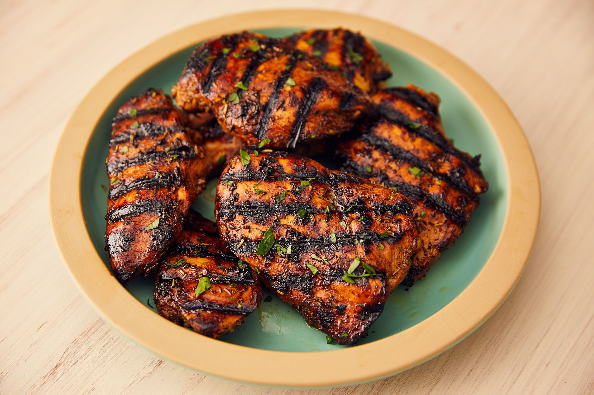

Skip The Diet,
welcome to our restaurant
We substance consumed to provide nutritional support for an organism. Food is usually of plant, animal
or fungal origin, and contains essential nutrients, such as carbohydrates, fats, proteins, vitamins
More
About us
we were at the last few weeks of college so we decided to maximize the time we had left together by
embarking on a 12 hour road trip through the southwest. On our back from New Mexico, we stayed at an
amazing Airbnb right in the heart of old town Tucson, Arizona. We thought it’d be a lovely idea to make
our own meals at this quaint Airbnb and what a lovely idea it was. Our Airbnb also had such cute dishes
and tablecloths that made this flatlay all the more perfect. It was a great morning spent in a great
place with the greatest company.
contact
Our Racipies
Located in the heart of Baltimore’s Arbutus neighborhood, Our Recipes Cafe is a nostalgic blend of coffee
house vibes, neighborhood convene and Grandma’s home cooking.
Pasta
Pasta is a type of food typically made from an unleavened dough of wheat flour mixed with water or eggs,
and formed into sheets or other shapes, then cooked by boiling or baking.
Cake
Cake is a form of sweet food made from flour, sugar, and other ingredients, that is usually baked.
In their oldest forms, cakes were modifications of bread, but cakes now cover a wide range of
preparations.

chicken Grill
Barbecue chicken consists of chicken parts or entire chickens that are barbecued, grilled or smoked
Your Order, Our Service
The companies that supply foodservice operators are called foodservice distributors. Foodservice
distributors sell goods like small wares (kitchen utensils) and foods. Some companies manufacture
products in both consumer and foodservice versions. The consumer version usually comes in
individual-sized packages with elaborate label design for retail sale. The foodservice version is
packaged in a much larger industrial size and often lacks the colorful label designs of the consumer
version.
Team Wordk
Occasionally some of my clients need more service and features in their choice . To fulfill their needs
and deliver their desired food fast we made a team. We’ve service at a time 600+ people.
700K
Youtube Subscriber
2.4M
Page Follower
400K
instagram Follower